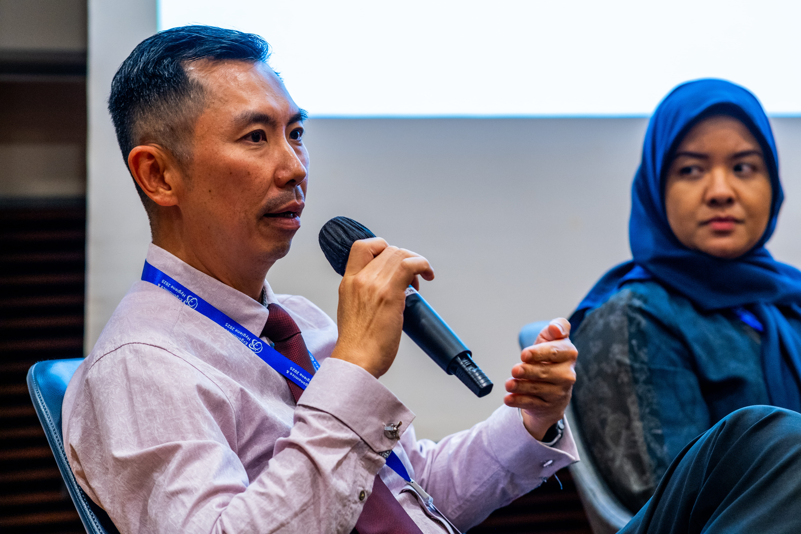

Engaging Talks That Transform Workplaces
Dr. Kelvin has been speaking at companies and events since 2009. His multidisciplinary approach — combining 16+ years of clinical chiropractic expertise with certified ergonomics — delivers unique, evidence-based insight that audiences remember and act on.


Available For
Signature Topics
Digital Dementia & Poor Posture: A Modern Day Health Epidemic
Digital Dementia — also known as computer coma — is a growing epidemic linked to lack of movement and cognitive stimulation in front of screens. Dr. Kelvin shares fascinating research and imaging on how poor posture affects your spine, skull, and brain function — and what you can do about it.
1 HourThe Workplace Athlete: Fixing Posture, Preventing Pain & Performing Better at Your Desk
Sitting is the new smoking. Dr. Kelvin — a Doctor of Chiropractic and Certified Ergonomist — shares practical tips on how to improve ergonomic and postural habits when working at a desk, backed by the latest research on longevity and activity.
1 HourPosture is Health: Look Better, Move Better & Feel Better with Proper Posture
With over 80% of people experiencing neck or back pain, this talk helps participants understand posture distortion patterns, Tech Neck, Forward Head Posture, and learn practical exercises they can do at the workplace and home.
1 HourThe Key to Health: A Healthy Spine & Nerve System
Understanding how your spine supports your nervous system — and why maintaining spinal health is foundational to your overall wellbeing, energy, and performance.
1 HourChiropractic Needs for Desk Warriors
A targeted session for office professionals on the specific spinal and postural challenges that come with extended desk work — and how chiropractic care, movement, and ergonomics can help.
1 HourWellbeing Programme Packages
All health talks can be combined with a hands-on posture workshop and/or individual posture assessments for a complete workplace wellbeing experience.
Health Talk
Choose Topic 1, 2 or 3
Duration: 1 Hour
Health Talk + Posture Exercise Workshop
Health Talk + 30–60 min Workshop
Duration: up to 2 Hours
Full Wellbeing Programme
Health Talk + Workshop + Posture Check
Duration: up to 3 Hours
*Before 9% GST. Contact Dr. Kelvin for custom packages or multi-session programmes.
The Business Case for Workplace Ergonomics
Investing in ergonomics isn't just a moral obligation — it's a financial one. According to OSHA and the Washington State Department of Labor:
ROI includes: increased productivity · decreased absenteeism · lower workers' compensation costs